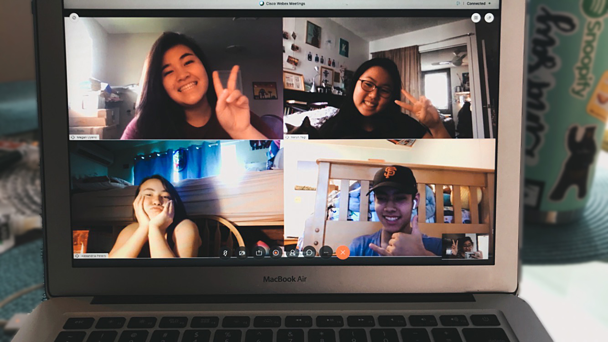

Lindsay Minami
Punahou 23'
- Create awareness, appreciation, accountability, and knowledge of Hawaii.
- Apply to ecology and/or evolution.
- Create a sense of place by honoring the intersection of culture, history, and ecology of Hawaii.
For those reading the website, they will acquire an awareness, appreciation, and knowledge of Hawaii. Their knowledge will make them accountable for their actions regarding the plants going forward. From this website, I gained awareness, appretiation, accountability, and knowlege of Hawaii by learning about the 10 different plants, and applying that knowledge to spread awareness and spread the knowledge. This applies to ecology because the different tabs show the connection with the plant to the ʻāina (land). It also connects to evolution because on the native tab, it talks about how an indigenous plant can become endemic. It also shows some of the new ecology terms we learned this semester. It also creates a sense of place by honoring intersection of culture, history and ecology of Hawaii. On the ʻulu, ʻohiʻa, kalo, maiʻa, and hala pages, there are moʻolelo (stories) connected to them, explained in their own tab, as well as the other plants’ cultural uses and some history about the plants.
I hosted an informational website using GitHub pages. It took around 25 hours to build using HTML, CSS, and JS. I first did research about the plants to help inspire the layout. After that, tabs were created for the native plants and then the canoe plants. To complete the website, home, bibliography and about pages were also created. I had help from Keryn Yagi and Alex Peters to refine and style.
I chose to do this as my project because my original project idea was to work with Megan Uyeno to create a field guide of the different plants on Rocky Hill. Due to the COVID-19 situation, I had to change our plans. I had help from Shea Sakahara to come up with this new project idea to make a website. I want my audience to take away a deeper appreciation for the native and canoe plants in Hawaii, and for them to be more accountable for their actions towards the ʻāina.
